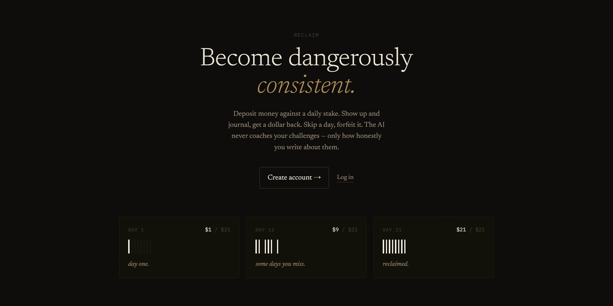
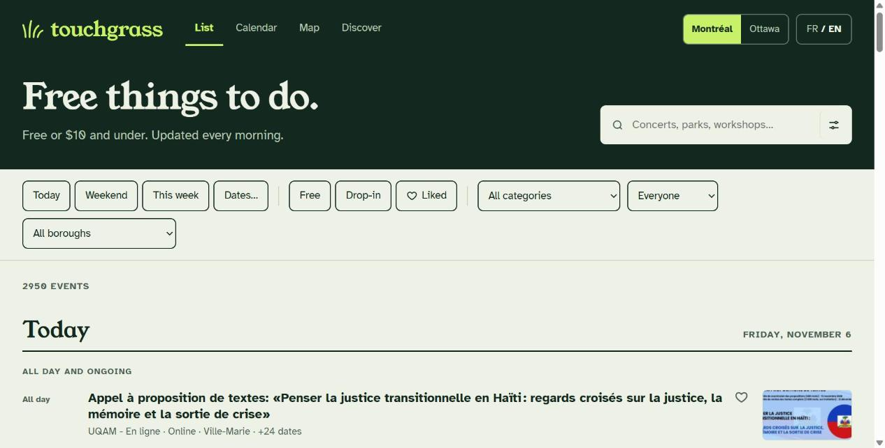

Full stack developer in Montreal. Available full time from January 2027.
I build software people actually use.
I am a Concordia Computer Science student graduating in December 2026. I run a SaaS product with real users on my own, and I built a library used by a 30+ member choir.
Selected projects
All code on GitHub
01 / SaaS product The Art of Consistency A bilingual accountability product with real users, where showing up every day earns your deposit back. Next.js, TypeScript, Node.js, PostgreSQL, Stripe, Claude API On the beatmixes by time of day, movement and taste 02 / Progressive web app Your DJ A phone app that plays an EP the way a DJ would: it picks the order and how much of each song to play, then mixes the music videos on the beat, based on the time of day, your movement and what it learns from you. JavaScript, Web Audio (AudioWorklet), PWA, Python, GitHub Actions, Vercel
03 / Automated website touchgrass Free and $10-and-under things to do in Montreal and Ottawa, rebuilt automatically every morning from public sources. TypeScript, Python, GitHub Actions, GitHub Pages Goal → planand a plan that adapts when you miss a day 04 / AI mobile app GoalAchiever A mobile app that turns a goal described in plain language into a phased roadmap and daily tasks, then adjusts the plan when a task is missed. React Native (Expo), TypeScript, Zustand, Supabase, PostgreSQL, Gemini API The MirrorAI that reflects your own entries back to you 05 / AI web app The Goal Journal A goal journal laid out like a shelf of notebooks, with an AI panel called The Mirror that reads your entries and shows you the patterns in your own writing. Next.js, TypeScript, Prisma, NextAuth, Vercel AI SDK, Claude and Gemini APIs Spring Boot + ReactJWT sign-in, private tasks for each user 06 / Full stack Full stack task manager A task manager with a Spring Boot REST API secured with JWT and a React front end, where each user manages their own tasks, priorities and due dates. Java, Spring Boot, Spring Security, JPA, JWT, React, Vite 3 rolescustomer, teller and administrator 07 / Full stack course project Banking web application A banking system built for a software engineering course, with a Java REST API, a React dashboard for each role and a domain model that follows a UML design. Java, Javalin, React, REST APIs, UMLMore work
Digital library for a choir
Scores and audio in one place for a 30+ member choir, with contribution tracking for every member and a spreadsheet-style admin view. Built as four independently deployed services (authentication, storage, admin view and members view) that communicate over REST.
Cloud-native microservices platform
Containerized microservices deployed to Google Kubernetes Engine with Terraform, with autoscaling and load balancing, then migrated to Red Hat OpenShift with Source-to-Image builds and Routes. CI/CD with GitHub Actions and Google Artifact Registry.
Multi-agent AI pipeline
Researcher, executor and validator agents collaborating through graph-based orchestration, with outputs validated against schemas, self-correction, and hard loop limits that keep latency and API cost in check.
A daily schedule with a timeline, timers, alarms and recurring tasks, stored in the browser with IndexedDB. It tracks work sessions and interruptions and shows stats on how the day actually went.
A cognitive check-up with five short tests (reaction time, digit span, Stroop, symbol matching and patterns) that scores each area and gives a recommendation for it.
Campus events application
Unit and integration tests covering REST endpoints and permissions, with a test SQLite database and pytest-mock. They made it possible to refactor the authentication middleware without breaking routes.
Software engineering course project
Team lead for a team of 4 through an agile cycle, with code reviews, BDD acceptance tests and Docker.
C++ projects
A hierarchical file system simulator and a key-value store. I traced an intermittent segfault to a shallow copy in a custom copy constructor that led to a double free.
Real-time fleet simulation and pricing
About 100 simulated drivers and 20 to 30 requests per minute, with a consumer computing demand-based pricing.
Terraform infrastructure
A personal project provisioning infrastructure on AWS and Microsoft Azure.
C# and ASP.NET web project
A complete university web project applying object-oriented design.
Hardware and physics
Arduino work with sensors and hardware I/O, and cars with electromagnetic motors built in a physics course.
Pick the version that fits the role.
Each one opens as a PDF. There are also three versions in French.